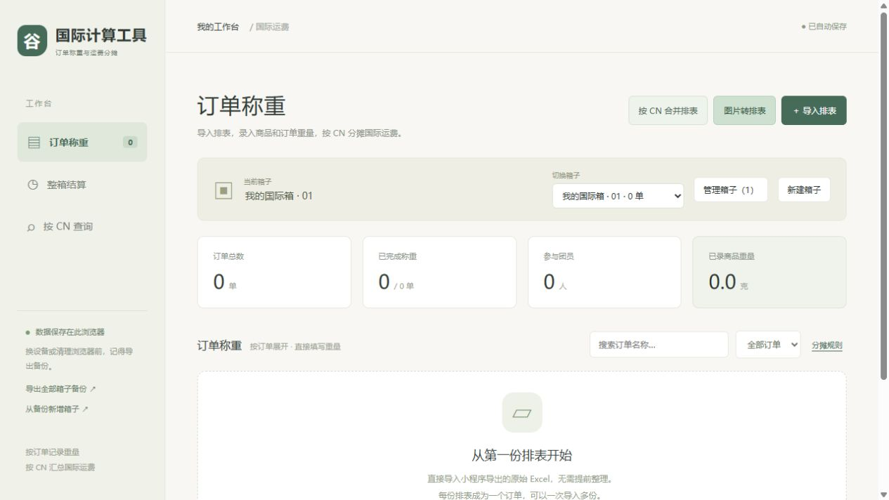
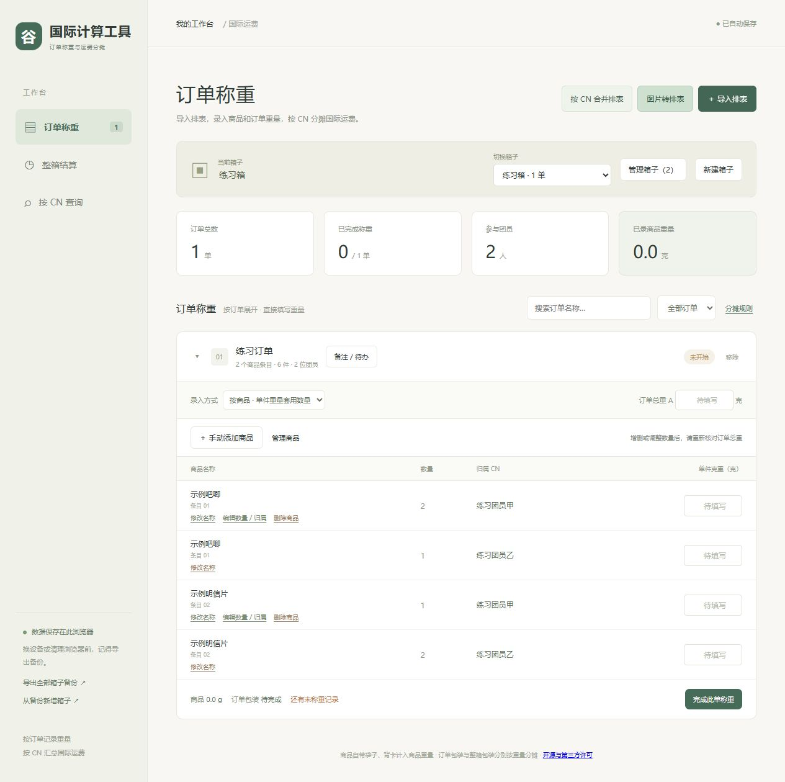
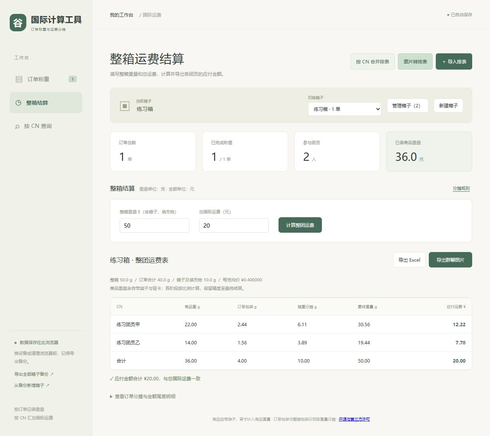

第一次在自己电脑上启动谷里
如果别人已经给你一个能打开的谷里网址，直接用那个网址就行，可以跳过整篇安装步骤。
第一步：把压缩包完整解压
- 找到下载的
gulii-source-v0.2.0.zip。浏览器一般会把它放到“下载”文件夹。
- 用鼠标右键点击压缩包，选择“全部解压缩”。解压软件也可能显示“解压到当前文件夹”。
- 选择一个自己找得到的位置，例如“文档”里的“谷里”文件夹。
- 等待解压完成，再打开里面的
gulii 文件夹。
- 检查是否看得到
启动谷里.cmd、先看这里-使用说明.html、dist 和 scripts。看得到这些，才是接下来要使用的文件夹。
不要只把启动文件拖到桌面：它需要和其他文件放在一起。以后要移动位置，请移动整个 gulii 文件夹。
第二步：安装一次运行工具 Node.js
Node.js 是让这个网页在你的电脑上运行的小工具，不是账号，也不需要购买。只在第一次使用时安装。
- 用浏览器打开 Node.js 官方下载页。
- 选择标有 LTS 的版本；不要选择 Alpha 等测试版。版本号会变化，不必和教程完全相同。
- 操作系统选择 Windows。普通 Intel/AMD 电脑选择 x64；如果电脑明确是 ARM 机型，选择 ARM64。不确定可到 Windows“设置 → 系统 → 系统信息”查看“系统类型”。
- 下载 Windows 安装程序（.msi），不是源码压缩包。不要复制网页上的开发命令。
- 下载完成后双击
.msi 文件，按安装向导操作，保留默认的安装目录和 PATH 选项。阅读并自行决定是否接受安装许可。
- 如果向导出现额外安装原生模块编译工具的选项，运行谷里不需要这一项，可不选。
- 安装完成后关闭安装窗口。已经打开的启动窗口也关掉，再进行下一步。无需安装 Git、Python 或其他编程工具。
第三步：双击启动
- 回到解压后的
gulii 文件夹。
- 双击 启动谷里.cmd。Windows 如果隐藏文件扩展名，可能只显示“启动谷里”，类型为 Windows 命令脚本。
- 会出现一个文字窗口，稍等它显示“谷里已启动”。
- 正常情况下，浏览器会自动打开。看到“国际计算工具”和“订单称重”，表示启动成功。
- 如果浏览器没自动打开，手动打开 Edge、Chrome 或其他现代浏览器，把
http://127.0.0.1:8080 粘贴到顶部地址栏，按回车。不要把它当关键词搜索，也不要改成 https。
- 使用期间保留文字窗口，可以最小化。它是让页面保持运行的窗口，不是报错。
这个地址只给这台电脑使用。把它发给别人，对方不会看到你的工具或数据。
第四步：先练习，再处理真实订单
- 阅读 新手使用指南。
- 可以先点页面上的“先用示例数据体验一下”。它会在当前箱子里加入一个示例订单，别把示例算进真实运费。
- 教程另附了
examples/练习排表.xlsx，不含真实团员信息，可照教程练习导入、称重和结算。
- 准备录入真实订单时，点“新建箱子”，另建一个正式箱子。
第五步：保存和退出
- 每次录完一批，点击侧栏“导出全部箱子备份”。屏幕较窄时，侧栏的备份按钮可能隐藏，可在“管理箱子”里点“备份全部箱子”。
- 确认浏览器下载中出现
.json 备份文件，并保存到自己找得到的位置。
- 关闭谷里网页，再关闭文字窗口。如果按 Ctrl+C 后问“终止批处理操作吗”，输入 Y 并回车。
- 下次使用时，再双击同一个启动文件，用同一个浏览器打开同一个地址。
- 一般会看到上次的箱子；如果没有，先别重新填写，按使用指南恢复备份。
打不开时，按现象查
双击后提示找不到 Node.js
先完成第二步。安装后关闭旧启动窗口，再重新双击。如果仍然找不到，重新运行官方安装程序检查默认 PATH 选项，或重启电脑后再试。不需要另外购买软件。
提示 Node.js 版本太旧
去官方页面安装当前 LTS 版，然后关掉旧启动窗口重新启动。谷里要求 Node.js 22 或更高版本。
提示地址已被占用
先在浏览器打开 http://127.0.0.1:8080，检查是不是谷里已经在运行。如果是，直接使用那个页面。若显示其他软件，先正常退出占用这个地址的软件，再启动谷里。不要为了绕过提示随意改端口：端口变化后，浏览器会把它当作不同的数据空间。
浏览器提示无法访问此页面
检查文字窗口是否仍然打开、地址是否完整、是否误写成 https。文字窗口如果显示错误，请保留错误内容反馈，不要反复双击许多次。
双击 index.html 后页面不正常
关掉这个页面，回到第三步，用“启动谷里.cmd”启动。直接双击 index.html 不等于启动完整工具。
旧数据不见了
先确认是否换了浏览器、浏览器个人资料、无痕模式、设备或网址。localhost 和 127.0.0.1 也不是同一个地址。找回原来的浏览器和地址，或使用 .json 备份恢复。
图片识别让我填连接码
在“图片转排表”的“识别方式”里，改选“浏览器识别（备用，准确率较低）”。连接码是给另行安装的本机 PaddleOCR 用的，这个包不包含那套配套服务。
Windows 阻止运行
先确认文件来自你信任的项目发布者。不要关闭杀毒或浏览器安全设置。无法判断时，停止运行并把提示反馈给维护者。
Mac 用户
Windows 的 .cmd 文件不能在 Mac 上使用。
- 完整解压，安装 Node.js 官方 LTS 的 macOS 安装程序。
- 打开“终端”，输入
cd ，注意 cd 后面留一个空格。
- 把解压后的
gulii 文件夹拖入终端，再按回车。
- 输入
npm start 并回车。
- 浏览器打开
http://127.0.0.1:8080，使用期间保留终端窗口。
- 退出前先导出备份，再到终端按 Ctrl+C。
谷里新手使用指南
这份教程不要求你会写代码。照着按钮名称一步一步操作即可。
页面里的 CN 就是团员昵称；订单 通常对应一份排表；箱子 则装着这次一起寄出的多个订单。先把各单记录好，最后再计算整箱运费。
先确认：你现在在哪一步
- 已经看到“国际计算工具”页面：直接从下面第一步开始。
- 手上只有一个下载的 ZIP 文件：先看 Windows 首次启动。
开始前准备什么
- 小程序导出的原始 Excel 排表，一般后缀是
.xlsx。不用先排版，也不要把截图直接改名成 xlsx。
- 能称出商品和包裹重量的秤。教程和页面的重量单位都是 克。
- 每个订单拆分前的总重量，以及分给每个人的商品重量。可以先拍照，之后再录入。
- 全部装好后整箱的重量，以及这一箱实际支付的国际运费。
缺少某个重量时，可以先留空，之后补填；不要用 0 代替“还没称”。所有记录只存在当前浏览器，建议固定使用同一个浏览器。
如果秤显示千克，先换算成克：例如 1.25 kg 要填写 1250。输入框只填数字，不必再输入“克”或“元”。
想先练习：照这组数字填一遍
下载包的 examples 文件夹里有 练习排表.xlsx，只有两位虚构团员。它与页面里的“示例数据”是两份不同的练习，不要混在同一个箱子计算。
- 点击“新建箱子”，输入
练习箱，点击“创建并切换”。
- 点击右上角“＋ 导入排表”，选择
examples/练习排表.xlsx。
- 页面应出现一个“练习订单”，两种商品、两位团员，共 6 件。
- 在两位团员各自的“示例吧唧”行，把“单件克重”都填成 10。
- 在两位团员各自的“示例明信片”行，把“单件克重”都填成 2。
- “订单总重 A”填写 40，然后点击“完成此单称重”。
- 点击侧栏“整箱结算”。整箱重量填写 50，总国际运费填写 20。
- 点击“计算整团运费”。结果应为：练习团员甲 12.22 元、练习团员乙 7.78 元，合计 20.00 元。
- 试着点击“导出 Excel”，确认浏览器下载了一份运费表。
- 练习结束后，新建一个正式箱子再录入自己的排表。练习箱可以在“管理箱子”里归档。
第一步：建立这次要计算的箱子
- 找到页面上方“当前箱子”。第一次使用一般显示“我的国际箱 · 01”。
- 可以直接点击箱子名称并改名，例如
十一月第一箱，修改会自动保存。
- 如果要保留之前的箱子，点击“新建箱子”，不要把旧箱子的商品删除后当新箱使用。
- 输入一个自己能认出的名字，点击“创建并切换”。
- 确认“当前箱子”显示刚刚填写的名称。
判断是否成功： 新箱子的订单总数是 0。新建箱子不会清空旧箱子。

第二步：导入自己的 Excel 排表
- 点击右上角“＋ 导入排表”。
- 在弹出的选文件窗口中，找到小程序导出的原始排表。
- 点选文件，再点“打开”。需要导入多份时，可以按住 Ctrl 选择多份；不熟悉这个操作时，一份一份导入也可以。
- 等待页面出现订单。
- 对照原表检查商品名称、归属 CN、数量，以及订单中的总件数。
- 在正确的箱子里继续导入其他订单；不需要为了每个订单新建一个箱子。
判断是否成功： “订单总数”增加，订单下方出现商品列表。一个商品分给多人时，会分别显示每个人的数量和克重输入框。
如果提示未识别到排表，确认原表里能找到“种类”和“昵称/总数”。当前工具不是任何格式的 Excel 都能自动理解。不要靠改文件后缀来转换格式。
第三步：录入订单重量和商品重量
- 如果订单收起来了，点击它左边的小三角展开。
- 在“订单总重 A”填写这一整个订单的实称重量，包含该订单原有的包装。例如这一单称出来 180 克，就填
180。
- 正常逐件录入时，保留“按商品 · 单件重量套用数量”。
- 根据商品名和 CN 找到对应行，在“单件克重”里填 一件 的重量。
- 如果某人买 3 件，每件 11.7 克，就填
11.7，不要填 35.1。程序会自己乘数量。
- 同款其他人的克重可逐行填写；某个人的物品实称不同，也可在那个人的行单独修改。
- 自带袋子、背卡如果一起称重，就算在商品重里，不要再额外加一次。
- 所有人都填写完后，查看订单底部是否仍有“还有未称重记录”等提醒。
- 确认无误，点击“完成此单称重”。
- 继续处理下一单。每单都要单独点一次完成。
判断是否成功： 订单右侧显示“已完成”，上方“已完成称重”的数量增加。

一整单只有一种商品，想统一填写
- 找到订单顶部“统一单件克重（克）”。这个输入框只在订单有一个商品条目时出现。
- 填写一个商品的重量。
- 点击“按数量一键填充克重”。
- 检查每个人的行。这个操作会覆盖这一商品之前给各人单独填的克重，需要的特殊重量请之后再改。
- 核对订单总重后，点击“完成此单称重”。
已经把一个人的商品一起称好
- 将“录入方式”改为“按人合称 · 填商品总重”。
- 页面会按 CN 显示输入框。
- 给每个人填写他在 当前这个订单 中所有商品加在一起的重量，不是跨订单的重量，也不是每件的重量。
- 填写订单总重，核对后点击“完成此单称重”。
不要在录入一半时反复切换模式；确实需要切换时，重新检查当前模式下的所有数字。
第四步：发现多件、少件、名字不清楚时
- 多了商品：在该订单里点“＋ 手动添加商品”，填写名称、CN 和数量；重量可稍后补。
- 数量或归属错了：点击商品旁的“编辑数量 / 归属”，修改后保存。
- 商品名不够详细：点击“修改名称”，输入新名称并保存。
- 少了某件商品：确认是需要从本次分摊移除后，再点该商品的“删除商品”。删除后可以在“管理商品”的“已删除商品”中恢复。
修改后要做什么： 凡涉及商品、数量、归属或重量的变化，都重新核对订单总重及称重完成状态。不要为了让运费算出来，随意提高包裹重量。
第五步：记录备注和待办
- 在订单标题旁点击“备注 / 待办”。
- “订单备注”写给这单相关团员看的说明，例如“特典随商品一起发出”。这段话会出现在核对单上。
- “团长待办”写自己需要处理的事，例如“缺一张卡，待联系卖家”。在输入框填写后点“添加待办”。
- 事情办完后，勾选那条待办。移除错了可在“已移除的待办”中恢复。
- 点击“保存并关闭”。只关掉窗口或点“取消”不会保存本次修改。
- 页面出现待办提醒时，点击“查看待办”可集中检查。
待办不会发给团员，也不会阻止计算。结算前仍应自己确认缺件、补称等事项是否影响本次分摊。
这里的“团员核对单可见”是指备注会出现在你导出的核对单里，不会自动替你发送消息或把订单发到网上。
第六步：计算整箱运费
- 先确认当前箱子的每一个订单都已完成称重。
- 点击侧栏“整箱结算”。窄屏时，导航按钮会显示在页面上方。
- “整箱重量 E”填写最终装好箱子的重量，包含所有商品、订单包装、外箱和填充物。
- “总国际运费”填写这一箱的实际总运费，单位为元。它是整箱总额，不是每个人的金额。
- 点击“计算整团运费”。
- 查看每个 CN 的应付运费，以及表格底部合计。
- 点击“导出 Excel”下载完整表格；点击“导出群聊图片”下载运费图片。人数多时可能生成多张。
- 到浏览器右上角“下载”列表或电脑“下载”文件夹确认文件已保存。
判断是否成功： 页面显示运费明细，所有团员应付金额合计与输入的总国际运费一致。

常见计算提示
- “请先完成所有订单称重”：回到“订单称重”，找到未完成订单，补齐并点击“完成此单称重”。
- “订单总重小于商品总重”：检查有没有把总重填成单件重、件数乘了两次、单位填错，或输入错行。
- “整箱重量小于所有订单总重之和”：检查整箱重量、各单总重和本箱是否混入其他箱子的订单。
- 修改数字后：再点一次“计算整团运费”，不要沿用旧截图或旧 Excel。
第七步：查询某位团员并生成核对单
- 点击侧栏或顶部导航“按 CN 查询”。
- 在“成员 CN”输入名字的一部分。
- 在下面的候选按钮里，点击这个人的 完整名字。只输入文字还不等于选中成员。
- 查看他在哪些箱子有商品。多个箱子会额外显示跨箱商品总列表。
- 如果要查已经归档的箱子，勾选“包含归档箱子”。
- 点“下载 Excel”，下载这名团员的汇总和详细记录。
- 或点“生成团员核对单”，先看预览中的 CN、箱子、订单分类、商品和数量。
- 点击“下载第 1 页 PNG”。有第二页、第三页时，也分别点一次下载。
- 把下载好的图片或 Excel 发给相应团员。
这张核对单是用来核对商品的，不是全团运费图片。核对单包含公开订单备注，不包含团长待办。未完成称重时，也能先核对商品数量。
第八步：备份，下次继续
- 点击侧栏“导出全部箱子备份”；窄屏找不到时，进入“管理箱子”，点击“备份全部箱子”。
- 浏览器会下载一个
.json 文件。这不是乱码，也不是要用 Excel 打开的表格，请原样保留。
- 把它放进自己找得到的备份文件夹，可以在文件名里加上日期，保留多个版本。
- 换电脑、换浏览器或更换网址前，再导出一次最新备份。
- 到新页面点“从备份新增箱子”，选择
.json 文件，再点“打开”。
- 等待箱子重新出现，切换几个箱子检查商品、重量和备注。
恢复会 新增 箱子，不会用备份覆盖现有箱子。同一份备份不要反复恢复，否则会产生带“恢复”字样的多份箱子，并被 CN 查询一起统计。
Excel 运费表、核对单 PNG 和原始排表都不能代替完整 .json 备份。清理浏览器数据前一定先备份。
第九步：整理已经完成的箱子
- 点击“管理箱子”。
- 在“使用中”找到想收起的箱子，点击“归档”。
- 它会从日常切换列表收起，原有记录全部保留。
- 想找回来时，进入“管理箱子 → 已归档”，点击“查看此箱”或“恢复箱子”。
- 如果所有箱子都归档了，当前页面仍可能显示最后一个归档箱子和提示；可以新建正式箱子继续。
归档不表示已经收款或寄出，也不等于删除。
进阶：同名商品分散在很多分类中
适合这种情况：同一个 Excel 里有多个日期分类，但“一织”“大和”等商品重复出现，希望按 CN 汇总后作为一单录入。
- 点击右上角“按 CN 合并排表”。
- 点击“选择 Excel 排表”，选原始文件。
- 检查界面显示的分类数、种类数、团员数和总件数。
- 查看汇总表，需要时搜索某个 CN 对照原表。
- 修改“汇总订单名称”，让自己能认出它。
- 勾选“我已核对 CN、种类和总件数，确认合并为一个订单”。
- 点击“确认并导入为一个订单”。如果只想另存汇总表，则点“下载汇总 Excel”。
只有名称完全相同的 CN 和种类才会合并。别名不会自动认成同一个人；看起来相似但实际不同的商品，也不要为了合并而强行改成同名。
进阶：只有排表图片，没有 Excel
- 点击“图片转排表”，选择清晰的表格图片。
- 找到“识别方式”，选“浏览器识别（备用，准确率较低）”。本源码包不包含“本机 PaddleOCR”的安装程序，不用填连接码。
- 按界面提示检查表格边界、表头和归属行，开始识别。
- 第一次加载识别组件可能比较慢，先等待进度，不要连续点击。
- 对照原图，逐项修改商品名称、CN、数量及备注。短名字、小字和赠品标记尤其容易认错。
- 核对总件数以及每个成员的归属；不确定的地方不要直接确认。
- 确认无误后，勾选核对选项，点击界面底部的确认导入按钮。
- 回到订单称重，检查新订单，再录入重量。
图片识别不能保证准确。复杂表格如果怎么改都难以核对，优先找回 Excel 排表，或先整理成当前工具支持的排表再导入。
出问题时怎么反馈
手机能不能用
如果有能打开的在线网址，可以用手机浏览器访问。这个下载包里的 Windows 启动文件不能在手机上运行；电脑上的 127.0.0.1 地址也不能发给手机当作共享网址。
记下你点了哪个按钮、期待出现什么、实际上出现了什么，以及浏览器名称。截图前遮住真实 CN、订单和其他个人信息。不要把完整备份文件发到公开讨论区。